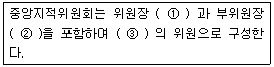
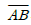
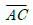
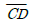
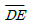
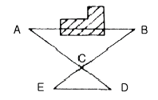
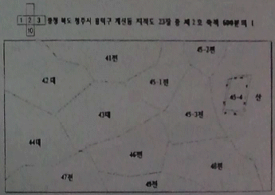

지적기능사 (2011-02-13 기출문제)
1과목: 지적일반(임의구분)
1. 다음 중 지적의 일반적인 특성과 가장 거리가 먼것은?
- 역사성
- 공개성
- 개발성
- 전문성
(정답률: 72%)

2. 다음 중 필지의 배열이 불규칙한 지역에서 진행 순서에 따라 지번을 부여하여, 진행 방향으로 지번이 순차적으로 연속되는 지번 부여 방법은?
- 사행식
- 단지식
- 부번식
- 합병식
(정답률: 82%)
3. 다음 중 지적도근점측량의 도선 구분이 가장 옳은 것은?
- ㄱ도선과 ㄴ도선
- 가도선과 나도선
- 1등도선과 2등도선
- A도선과 B도선
(정답률: 79%)
4. 평판측량방법에 따라 조준의를 사용하여 측정한 경사거리가 89.6m이고 경사분획이 17 이었을 때 수평거리는 얼마인가?
- 88.3m
- 88.7m
- 89.1m
- 89.9m
(정답률: 33%)
5. 두 점간의 거리가 96m이고 종선차가 34m일 때 방위각은?
- 20° 44' 33＂
- 69° 15' 27＂
- 200° 44' 33＂
- 249° 15' 27＂
(정답률: 56%)
6. 현행 지적 관련 법률에서 규정하고 있는 지목의 종류는?
- 16개
- 20개
- 24개
- 28개
(정답률: 91%)
7. 공유수면매립지의 토지 중 제방 등을 토지에 편입하여 등록하는 경우 지상경계를 새로이 결정하는 기준은?
- 최대만조위
- 구조물 중앙
- 최저수위
- 바깥쪽 어깨부분
(정답률: 71%)
8. 토지등록의 원리로 우리나라에서 적용해 온 지적의 원리에 해당하지 않는 것은?
- 자유주의
- 형식주의
- 공개주의
- 국정주의
(정답률: 77%)
9. 다음 중 임야조사사업에 대한 설명으로 옳지 않은 것은?
- 임야는 토지에 비하여 경제적 가치가 높지 않아 분쟁은 적었다.
- 토지조사사업에 비해 적은 인원으로 업무를 수행하였다.
- 역둔토를 국유화하여 공공연한 토지수탈을 감행하였다.
- 적은 예산으로 사업을 완성하였다.
(정답률: 82%)
10. 다음 중 평판측량방법에 따른 세부측량의 방법에 해당하지 않는 것은?
- 교회법
- 도선법
- 방사법
- 지거법
(정답률: 66%)
11. 다음 중 도면에 실선과 허선을 각각 3m로 연결하고, 허선에 0.3mm의 점 2개를 제도하는 행정구역선은?
- 시·도계
- 시·군계
- 읍·면계
- 동·리계
(정답률: 55%)
12. 다음 중 토지소유자가 지적공부의 등록사항에 잘못이 있음을 발견하고 소관청에 그 정정을 신청함으로 인하여 인접 토지의 경계가 변경되는 경우 그 정정 방법으로 가장 옳은 것은?
- 소관청의 직권으로 처리한다.
- 큰 면적의 토지소유자의 의견으로 처리한다.
- 인접 토지소유자의 승낙서에 의한다.
- 지적공부만 정정한다.
(정답률: 55%)
13. 다음 중 임야조사사업 당시의 사정기관으로 옳은 것은?
- 임야심사위원회
- 토지조사위원회
- 도지사
- 법원
(정답률: 48%)
14. 다음 중 지적의 발전 단계별 분류에 해당하지 않는 것은?
- 세지적
- 도해지적
- 법지적
- 다목적지적
(정답률: 86%)
15. 지적의 지목은 사람의 신분에 관한 기록인 호적의 무엇과 비교할 수 있는가?
- 본관
- 성명
- 성별
- 호주
(정답률: 70%)
16. 다음 중 임야도의 축척 구분이 옳은 것은?
- 1/1000, 1/3000
- 1/1200, 1/3000
- 1/1200, 1/6000
- 1/3000, 1/6000
(정답률: 89%)
17. 다음 중 지적측량의 면적 측정 방법으로만 옳게 나열한 것은? (단, 지적측량 시행규칙에 따름)
- 삼사법, 전자면적측정기법
- 전자면적측정기법, 푸라니미터법
- 전자면적측정기법, 좌표면적계산법
- 좌표면적계산법, 삼사법
(정답률: 81%)
18. 다음 중 지적도에 등록하여야 하는 사항이 아닌것은?
- 지번
- 지목
- 면적
- 경계
(정답률: 45%)
19. 다음 중 지번을 부여하는 방법으로 옳은 것은?
- 지번은 북서에서 남동으로 순차적으로 부여한다.
- 지번은 북동에서 남서로 순차적으로 부여한다.
- 지번은 남에서 북으로 순차적으로 부여한다.
- 지번은 동에서 서로 순차적으로 부여한다.
(정답률: 83%)
20. 다음 중 등록전환에 대한 설명으로 옳은 것은?
- 임야대장 및 임야도에 등록된 토지를 토지대장 및 지적도에 옮겨 등록하는 것
- 지적도에 등록된 토지를 임야도에 옮겨 등록하는 것
- 토지대장에 등록된 토지를 임야대장에 옮겨 등록하는 것
- 경계점좌표등록부에 등록된 사항을 임야대장에 옮겨 등록하는 것
(정답률: 82%)
2과목: 지적측량(임의구분)
21. 토지조사사업 당시 사정한 사항을 재심사하여 확정한 처분을 무엇이라 하는가?
- 결정
- 재결
- 재사정
- 토지조사
(정답률: 74%)
22. 다음 중 지번색인표의 등재사항으로만 나열된 것은?
- 제명, 지번, 도면번호, 결번
- 지번, 지목, 결번, 도면번호
- 축척, 지번, 본번, 결번
- 지번, 경계, 결번, 제명
(정답률: 76%)
23. 다음 중 중앙지적위원회의 구성 기준에 대한 아래 설명에서 ①~③에 들어갈 내용이 모두 옳은 것은?

- ① 1명 ② 1명 ③ 5명 이상 10명 이하
- ① 1명 ② 1명 ③ 7명 이상 11명 이하
- ① 1명 ② 2명 ③ 7명 이상 11명 이하
- ① 1명 ② 2명 ③ 15명 이상 20명 이하
(정답률: 81%)
24. 다음 중 지적측량을 필요로 하는 토지의 이동과 거리가 먼 것은?
- 등록전환
- 분할
- 지목변경
- 신규등록
(정답률: 68%)
25. 축척이 1/1000인 지적도의 포용면적 규격은 얼마인가?
- 30000m2
- 50000m2
- 80000m2
- 120000m2
(정답률: 75%)
26. 다음 중 현행 지적 관련 법률에 따른 지적공부에 해당하지 않는 것은?
- 공유지연명부
- 토지대장
- 토지조사부
- 지적도
(정답률: 52%)
27. 다음 중 경계점좌표등록부의 정리 방법 기준에 대한 설명으로 옳은 것은?
- 부호도의 각 필지의 경계점 부호는 왼쪽 위에서부터 오른쪽으로 경계를 따라 부여한다.
- 합병으로 존치되는 필지의 부호도는 그대로 유지한다.
- 합병으로 인하여 말소된 필지의 경계점좌표등록부는 폐기한다.
- 토지대장에 등록된 토지는 경계점좌표등록부를 작성할 수 없다.
(정답률: 64%)
28. 다음 중 미지점에 측판을 세우고 기지점을 시준한 방향선에 의하여 위치를 측정하는 방법은?
- 전방교회법
- 후방교회법
- 측방교회법
- 원호교회법
(정답률: 63%)
29. 다음 중 지적의 기능으로 가장 거리가 먼 것은?
- 토지등기의 기초
- 토지거래의 기준
- 토지감정평가의 기초
- 토지표고측정의 기준
(정답률: 55%)
30. 다음 그림에서

의 거리는 얼마인가? (단,
= 10m,
= 5m,
= 7m, //이다.)
- 3.5m
- 14m
- 21m
- 28m
(정답률: 79%)
31. 각 도곽선의 신축된 차가 ΔX1 = -3mm, ΔX2= -4mm, ΔY1 = -4mm, ΔY2 = -5mm 일 때 신축량은?
- -3mm
- -4mm
- -5mm
- -6mm
(정답률: 76%)
32. 다음 중 축척변경위원회의 심의·의결사항이 아닌것은?
- 축척변경 시행계획에 관한 사항
- 청산금의 이의신청에 관한 사항
- 지번별 제곱미터당 금액의 결정에 관한 사항
- 지번별 측량방법에 관한 사항
(정답률: 54%)
33. 다음 중 지적기준점에 해당하지 않는 것은?
- 지적삼각점
- 지적삼각보조점
- 공간삼각점
- 지적도근점
(정답률: 88%)
34. 다음 중 공유지연명부에 등록하여야 할 사항이 아닌 것은?
- 소유자의 성명
- 소유자의 주소
- 소유자의 주민등록번호
- 소유면적과 지목
(정답률: 52%)
35. 다음 중 토지조사사업 당시 작성된 지적도의 축척이 아닌 것은?
- 1/600
- 1/1000
- 1/1200
- 1/2400
(정답률: 64%)
36. 다음 중 토지의 이용의 이용에 따른 지목의 구분이 옳지 않은 것은?
- 일반 공중의 위락·휴양에 적합한 시설물을 갖춘 경마장 - 유원지
- 자동차 정비공장 안에 설치된 송유시설 부지 - 주유소용지
- 축산업을 하기 위하여 초지를 조성한 토지 - 목장용지
- 산림을 이루고 있는 수림지 - 임야
(정답률: 70%)
37. 다음 중 지적공부에 등록하는 지번, 지목, 면적, 경계 또는 좌표는 토지의 이동이 있을 때 토지소유자의 신청을 받아 누가 결정하는가?
- 토지소유자
- 지적소관청
- 대한지적공사
- 지적측량업자
(정답률: 87%)
38. 다음 중 토지의 합병을 신청할 수 없는 경우가 아닌 것은?
- 합병하려는 토지가 등기된 토지와 등기되지 아니한 토지인 경우
- 합병하려는 각 필지의 면적이 서로 다른 경우
- 합병하려는 토지의 지적도 및 임야도의 축척이 서로 다른 경우
- 합병하려는 각 필지의 지반이 연속되지 아니한 경우
(정답률: 53%)
39. 경위의측량방법으로 세부측량을 하는 경우 측량결과도에 기재하여야 할 사항이 아닌 것은?
- 지상에서 측정한 거리 및 방위각
- 측량 대상 토지의 경계점 간 실측거리
- 지적도의 도면번호
- 도곽선의 신축량과 보정계수
(정답률: 62%)
40. 다음 중 도면에 등록하는 도관선은 얼마의 폭으로 제도하여야 하는가?
- 0.⑤mm
- 0.1mm
- 0.2mm
- 0.3mm
(정답률: 66%)
3과목: 지적공부정리(임의구분)
41. 다음 중 지적공부의 정리방법 기준에 대한 설명으로 옳지 않은 것은?
- 지적공부를 이용하여 지적 측량을 한 때에는 지적 측량 성과파일에 의하여 지적공부를 정리하여서는 아니된다.
- 지적공부의 정리사항 중 도곽선과 그 수치 및 말소는 붉은색으로 한다.
- 지적공부에 등록된 사항은 칼로 긁거나 덮어서 고쳐 정리하여서는 아니된다.
- 지적확정측량 ⁃ 축척변경 및 지번변경에 따른 토지 이동의 경우를 제외하고는 폐쇄 또는 말소된 지번은 다시 사용할 수 없다.
(정답률: 54%)
42. 다음 중 토지 등록 장부로서 오늘날의 토지 대장과 같은 양안이 있었던 시대는?
- 고구려
- 백제
- 고려
- 조선
(정답률: 81%)
43. 다음 중 지적측량의 구분이 가장 옳은 것은?
- 기초측량과 세부측량
- 삼각측량과 도근측량
- 경위의측량과 평판측량
- 사진측량과 위성측량
(정답률: 86%)
44. 방위각법에 의한 지적도근점측량에서 각의 관측과 계산단위 기준은 얼마인가?
- 라디안
- 초
- 분
- 도
(정답률: 55%)
45. 다음 오차의 종류 중 최소제곱법에 의한 확률법칙에 의해 처리가 가능한 것은?
- 누차
- 착오
- 정오차
- 우연오차
(정답률: 64%)
46. 다음 중 지적 관련 법률에 따른 경계의 의미로 옳은 것은?
- 담장, 둑·철조망 등 인위적으로 설치한 경계
- 계곡, 능선 등 자연적으로 형성된 경계
- 눈으로 식별할 수 있는 형태를 갖는 선
- 지적공부에 등록한 선
(정답률: 75%)
47. 축척 1/1200 인 지역의 원면적이 900m2 인 토지를 분할하는 경우, 분할 후의 각 필지의 합계와 분할전 면적과의 오차의 최대허용범위는 얼마인가?
- ±14m2
- ±18m2
- ±24m2
- ±36m2
(정답률: 60%)
48. 다음 중 도곽선의 역할에 대한 설명으로 옳지 않은 것은?
- 인접 도면과의 접합 기준이다.
- 면적 측정 방법 결정의 기준이다.
- 기준점 전개의 기준이다.
- 도곽의 신축량을 측정하는 기준이다.
(정답률: 41%)
49. 다음 중 각을 측정할 수 있는 장비에 해당하지 않는 것은?
- 트랜싯
- 데오도라이트
- 앨리데이드
- 토탈스테이션
(정답률: 71%)
50. 다음 중 트랜싯의 3축에 해당하지 않는 것은?
- 시준축
- 수평축
- 상부축
- 수직축
(정답률: 72%)
51. 다음 그림에 대한 설명으로 옳은 것은?(단, 도면의 모든 선은 실선으로 간주한다.)

- 주소정정에 따른 도면 정리다.
- 위치정정에 따른 도면 정리다.
- 분할에 따른 도면 정리다.
- 합병에 따른 도면 정리다.
(정답률: 64%)
52. 지번부여지역 안의 토지로서 토지에 대한 물권의 효력이 미치는 범위를 정하고 거래 단위로서 개별화시키기 위하여 인위적으로 구획한 법적 등록 단위를 무엇이라고 하는가?
- 필지
- 대지
- 획지
- 택지
(정답률: 85%)
53. 3변의 길이가 각각 12m, 16m, 20m 인 삼각형 모양의 토지 면적은 얼마인가?
- 60m2
- 96m2
- 120m2
- 186m2
(정답률: 68%)
54. 다음 중 지적공부를 열람하거나 등본에 의하여 외부에서 알 수 있도록 하는 것과 가장 관계가 밀접한 것은?
- 지적공개주의
- 지적형식주의
- 일필일목의 원칙
- 경계불가분의 원칙
(정답률: 76%)
55. 다음 중 일람도에 등재하여야 하는 사항이 아닌것은?
- 도곽선
- 기초점
- 도면번호
- 도면의 축척
(정답률: 56%)
56. 다음 중 주된 용도의 토지에 편입하여 1필지로 할수 있는 경우가 아닌 것은?
- 종된 용도의 토지의 지목이 "대" 인 경우
- 주된 용도의 토지의 편의를 위하여 설치된 도로 부지
- 주된 용도의 토지로 둘러싸인 토지로서 다른 용도로 사용되고 있는 토지
- 주된 용도의 토지의 편의를 위하여 설치된 구거 부지
(정답률: 58%)
57. 도면에 등록하는 지적측량기준점의 명칭과 번호는 얼마의 크기로 제도하여야 하는가?
- 1.5mm 내지 2.0mm
- 2.0mm 내지 3.0mm
- 2.5mm 내지 4.0mm
- 2.5mm 내지 5.0mm
(정답률: 78%)
58. 다음 중 지적소관청이 토지의 표시 변경에 관하여 관할등기관서에 그 등기를 촉탁하여야 하는 경우에 해당하지 않는 것은?
- 축척변경을 하는 경우
- 지적공부에 등록된 지번을 변경하는 경우
- 잘못된 지적공부의 등록사항을 정정하는 경우
- 토지를 신규등록 하는 경우
(정답률: 43%)
59. 지적소관청이 토지소유자에 관하여 지적공부에 등록된 사항을 정정하고자 하는 경우 참고하여야 하는 자료에 해당하지 않는 것은?
- 등기필증
- 등기필증사본
- 등기부등본
- 등기부초본
(정답률: 54%)
60. 토지조사사업 당시 확정된 소유자가 다른 토지 간의 사정된 경계선을 뜻하는 것으로 사정선이라고도 하는 것은?
- 강계선
- 지계선
- 구획선
- 지역선
(정답률: 74%)